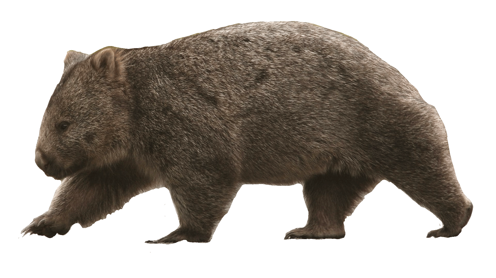

Common Wombat
Vombatidae Ursinus

DESCRIPTION
The common wombat is a short, stocky, barrel-shaped animal with physical characteristics that reflect its burrowing nature. It has a broad head with small eyes, a short strong neck, powerful shoulders and a very small tail (25 mm) hidden by fur. Colour of the wombat’s coarse coat varies from glossy black, dark grey, silver-grey, chocolate brown, grey-brown, sandy and cream. In southern Victoria, there is a small colony of ash-white wombats and albino animals have been reported, as well. Often the coat can also be coloured by the soil (e.g. clay can stain the fur red), and/or have patches that are lighter in colour.
Wombats differ from other marsupials by having only two incisor teeth in the upper jaw. The incisor and molar teeth of this animal are also unique because they have open roots and continue to grow throughout the animal’s life.
BEHAVIOR
Common wombats are a solitary,
territorial species, with each wombat
having an established range in which it lives and feeds. In this area, they dig a tunnel system, with tunnels ranging from 2 to 20 m in length, along with many sidetunnels. Often nocturnal, the common wombat does come out during the day in cooler weather, such
as in early morning or late afternoon.

Common wombats are widespread in the cooler and better-watered parts of southern and eastern Australia, including Tasmania, and in mountain districts as far north as the south of Queensland, but are declining in
western Victoria and South Australia.